체형부터 잽니다.
인바디와 둘레, 사진으로 지금 상태를 기록합니다.
LINE, BALANCED.
인바디와 둘레, 사진으로 지금 상태를 기록합니다.
빼고 싶은 부위를 표시하고 몇 회 받을지 정합니다.
멍이나 붓기가 남는 부위는 미리 알려 드립니다.
NOT MORE, BUT MORE PRECISE.
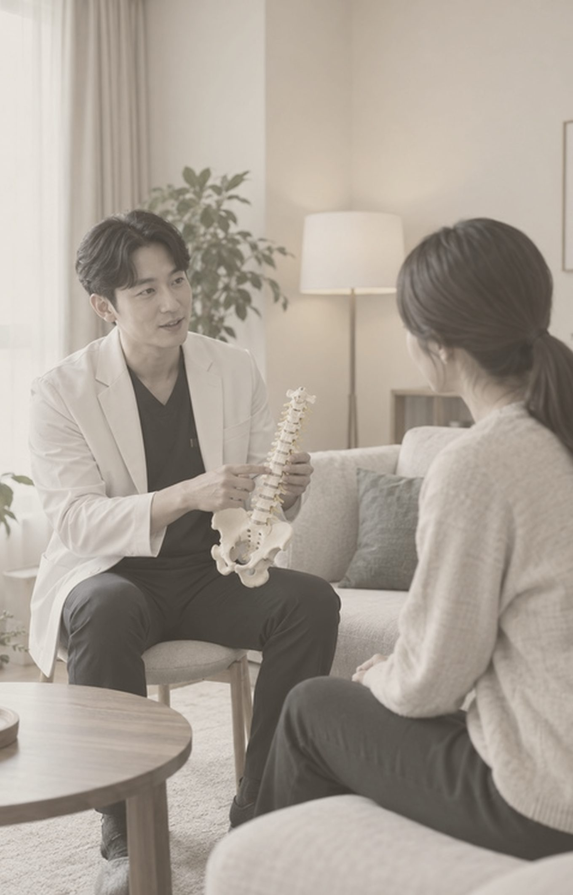
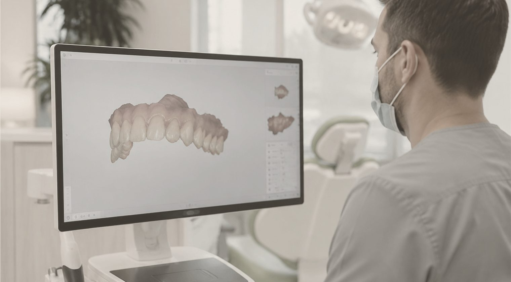
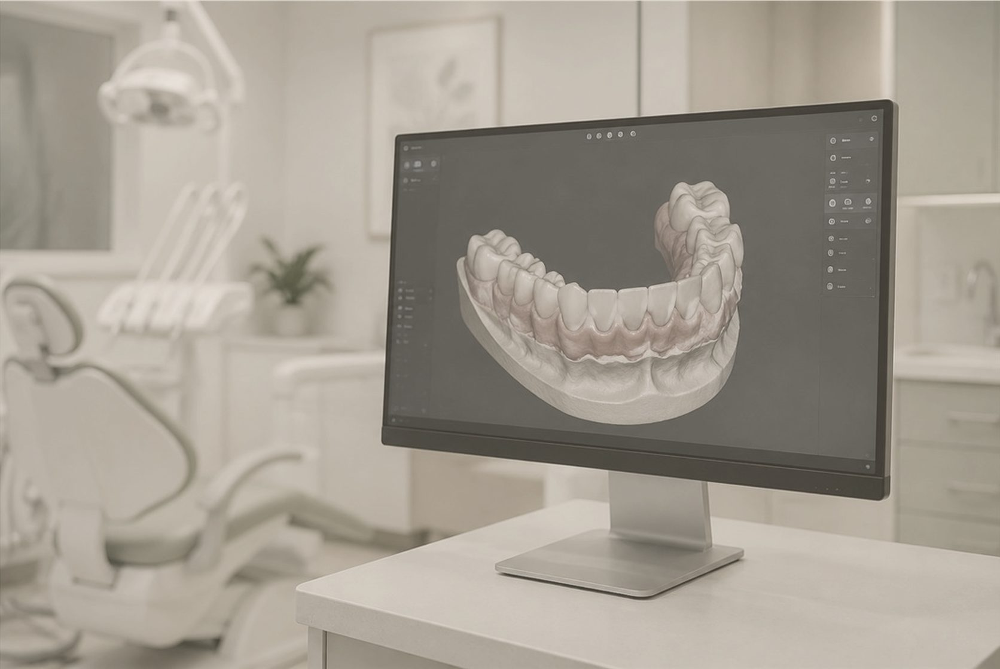
WHY GYEOL:ON
리프팅이나 피부 관리 없이 비수술 바디 컨투어링만 합니다.
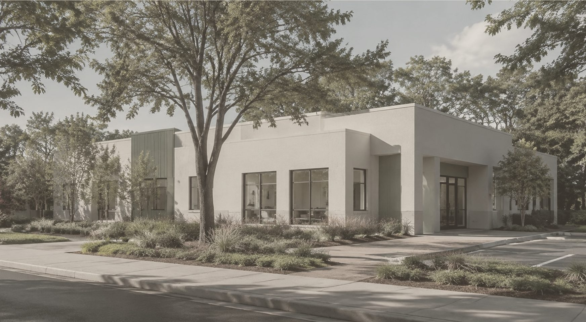
지방 두께를 부위마다 재서 두꺼운 곳은 강도를 올리고 얇은 곳은 낮춥니다.
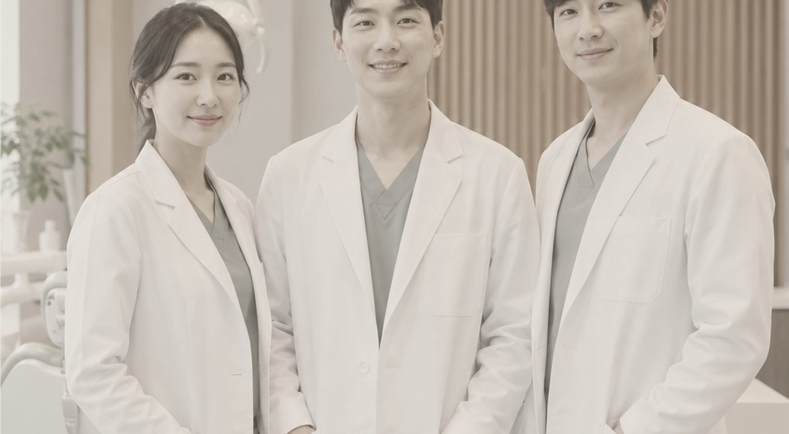
처음 상담한 원장이 시술까지 하고, 중간에 담당이 바뀌지 않습니다.
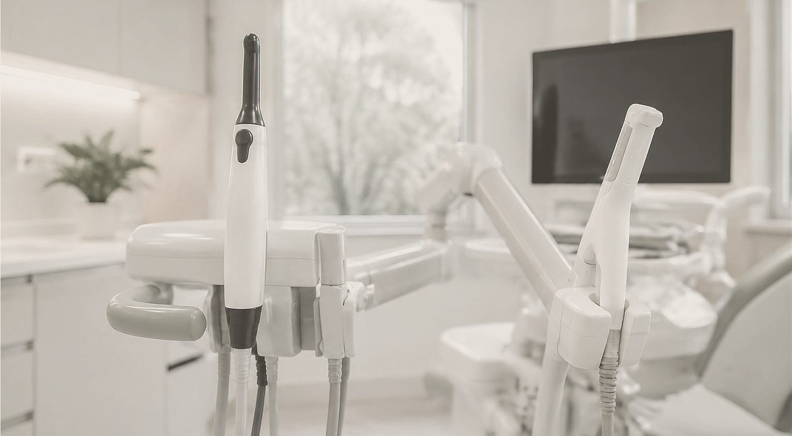
한 시간에 한 분만 예약을 받아, 오시면 기다리지 않고 바로 상담합니다.
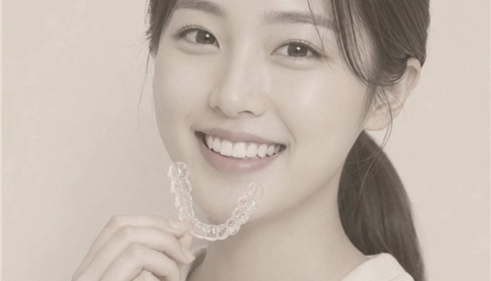
대표원장 소개
상담 30분, 시술 30분,THE GYEOL:ON STANDARD
그 한 시간 동안은 다른 분을 받지 않습니다.
빼 달라고 하신 부위보다 더 넓게 시술을 권하는 일은 없게 하겠습니다.
VIEW MORECLINIC
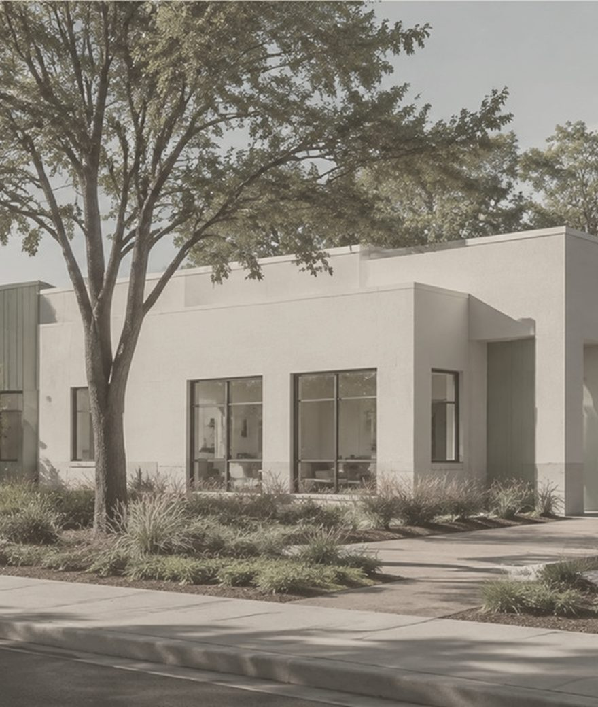
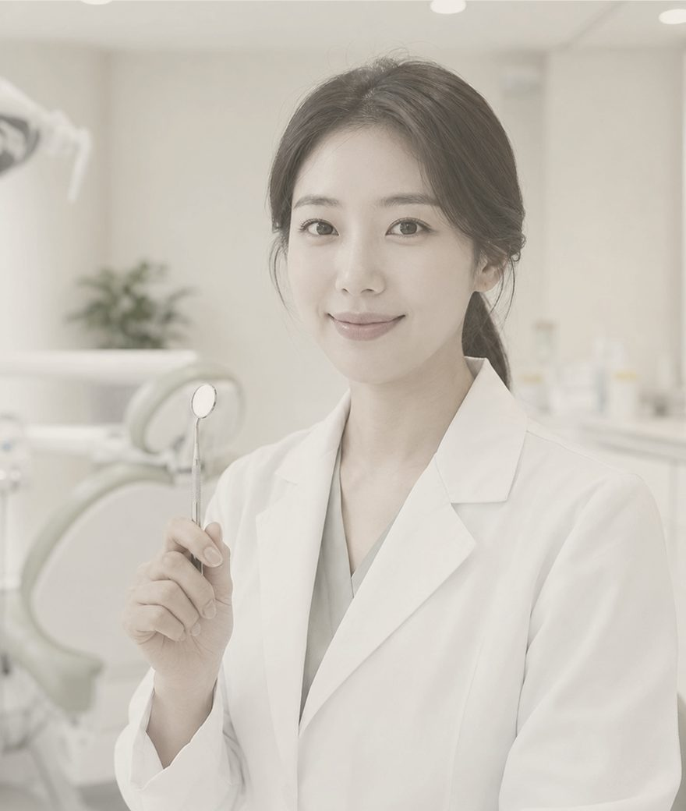
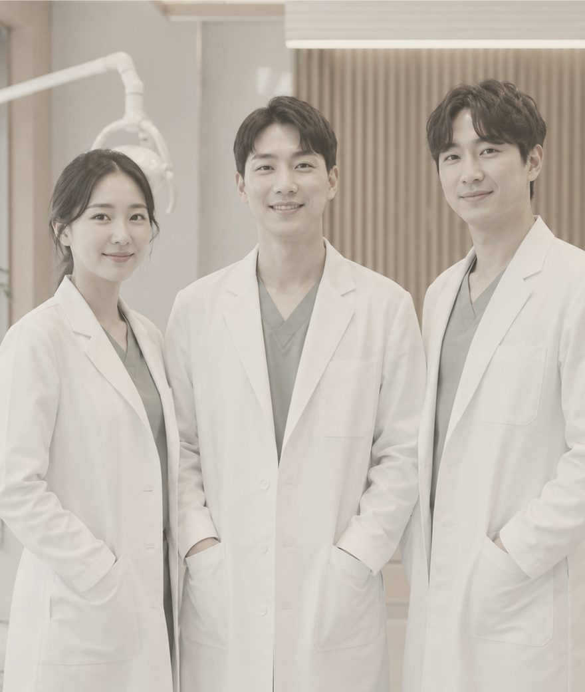
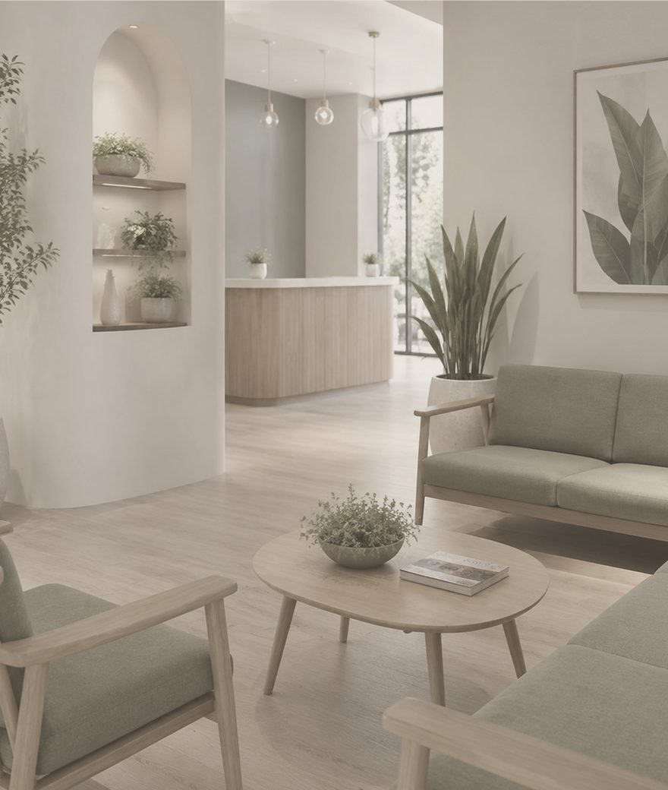
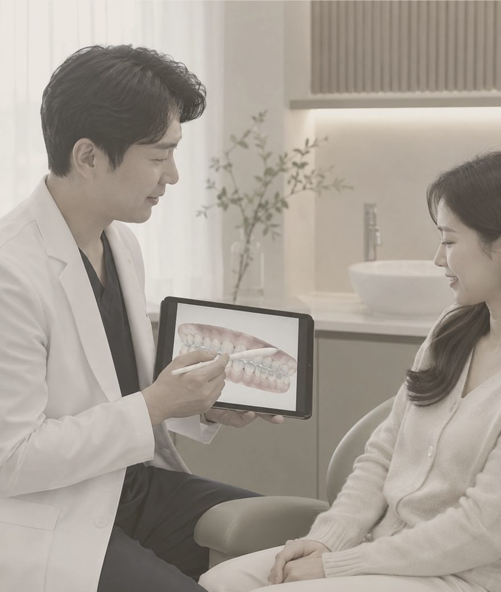
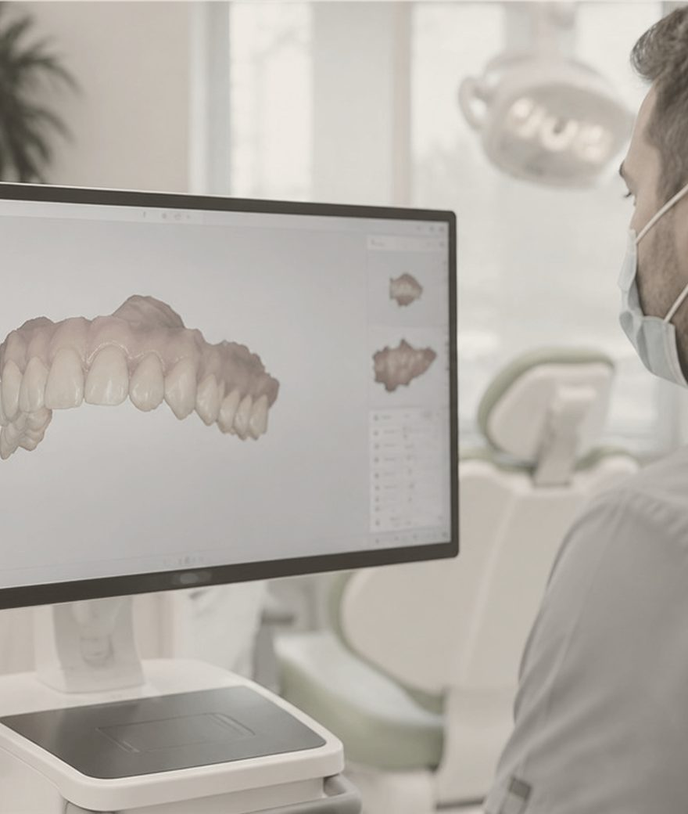